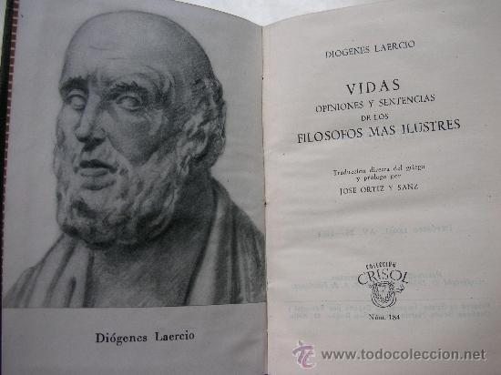

Escépticos
Conceptos

De Sexto Empírico
(Tomados del libro "Esbozos pirrónicos" de Sexto Empírico).
El escepticismo es la capacidad de establecer antítesis en los fenómenos y en las consideraciones teóricas, según cualquiera de los tropos, gracias a la cual nos encaminamos, primero hacia la suspensión del juicio y después hacia la ataraxia. La suspensión del juicio es ese equilibrio de la mente por el que ni rechazamos ni ponemos nada. Y la ataraxía es bienestar y serenidad de espíritu. El fundamento de la construcción escéptica es ante todo que a cada proposición se le opone otra proposición de igual validez. Desde ahora decimos que el fin del escepticismo es la serenidad de espíritu en las cosas que dependen de la opinión de uno y el control del sufrimiento en las que se padecen por necesidad. El escepticismo recibe también el nombre de pirronismo por parecernos que Pirrón se acercó al escepticismo de forma más tangible y expresa que sus predecesores. Se considera que los sistemas filosóficos son, en líneas generales, tres: dogmático, académico y escéptico. El que dogmatiza establece como real el asunto sobre el que se dice que dogmatiza, mientras que el escéptico no establece sus expresiones como si fueran totalmente reales.
De Diónenes Laercio sobre Pirrón
(Del libro de Diógenes Laercio)
Decía (Pirrón) que no hay cosa alguna honesta ni torpe, justa o injusta. Y también que nada hay realmente cierto, sino que los hombres hacen todas las cosas por ley o por costumbre. Su vida era consiguiente a esto, no rehusando nada, ni nada abrazando. Tenía fama de que todo le resultaba indiferente y sin afección y decía que conviene al sabio permanecer en tal sosiego. Tuvo muchos seguidores que fueron llamados pirrónicos en honor a su nombre. Enseñaban que a toda razón se le opone otra semejante. Que las cosas no son tales como aparecen, sino que solo parecen. Niegan también estos filósofos toda demostración, criterio, signo, causa, movimiento, disciplina, generación, y que haya cosa alguna buena y mala por naturaleza
De Diógenes Laercio sobre Timón
(Del libro de Diógenes Laercio)
Timón era elocuentísimo, pero no teniendo de que mantenerse se dedicó a la oratoria por varias ciudades hasta que llegó a Atenas. Escribió y vivió mucho, pues murió a los 90 años. Era indiferente de las cosas, y su serenidad llegaba a tal punto de no hacer caso aún de lo más importante. Timón no tuvo sucesor en la secta, y quedó abandonada hasta que la restauró Tolomeo de Cirene.
De Diógenes Laercio sobre los escépticos
(Del libro de Diógenes Laercio)
Todos estos se llamaron Pirrónicos, por el nombre del maestro, y por el dogma Aporéticos, Escépticos, Efécticos y Zetéticos. La filosofía Zetética se llamó así, porque siempre la busca y nunca la encuentra. La Eféctica, porque después de haber buscado queda sin deliberación alguna. Y la aporética, porque sus secuaces lo dudan todo. Los escépticos, pues, procuran aniquilar todos los dogmas de las demás sectas, y no definir ellos dogmáticamente cosa alguna.
<- Atrás